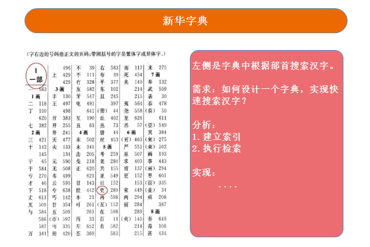
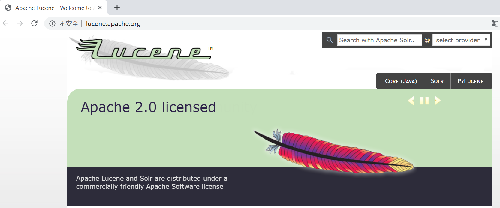

Lucene
全文检索引擎工具包，实现从海量数据中快速查询数据。
课程目标
目标1: 掌握索引流程的代码实现
目标2: 掌握检索流程的代码实现
目标3: 熟悉Lucene分词器
目标4: 掌握第三方IK分词器应用
目标5: 熟悉Lucene的Field域的代码应用
01、搜索实现方案
目标：能够说出哪些搜索实现方案以及各自特点
需求：开发图书管理系统，查询图书名称包含java的书籍？
方案一(传统方案)
方案二(全文检索方案)
此外还有一个区别，我们用一个例子来说明，例如：数据库存在一条数据，其中一个字段的值为：”四川的火锅很好吃”，此时，我们要搜索关键字 “四川火锅”，按照传统方案是搜索不到（like ‘’%四川火锅%’’），而使用全文检索就能够搜索到。
小结
- 传统方案
- 优点：使用简单，简单的SQL语句即可。
- 缺点：1、数据量大时查询性能差（不会通过索引查询）；2、查询的结果不够全面。
- 全文检索方案
- 缺点：使用相对复杂，通过提供的API进行操作。
- 优点：1、数据量大时查询性能好；2、查询的结果全面
02、搜索技术应用场景
目标：能够说出有哪些典型的应用场景
- 单机软件搜索（idea）
- 网上商城（京东，淘宝）
- github
- 搜索引擎（百度，谷歌，搜狗）
共同特点：数据量大、搜索范围全面
03、倒排索引
目标：能够说出倒排索引的存储格式
举个例子：使用新华字典查找汉字，先找到汉字的偏旁部首，再根据偏旁部首对应的目录（索引）找到目标汉字。

样例：
- 文档1(编号0): we like java java java
- 文档2(编号1): we like lucene lucene lucene
| （Term 词条） | (Doc 文档，Freq 频率) | （Pos 位置） |
|---|---|---|
| we | (0,1) (1,1) | (0)(0) |
| like | (0,1) (1,1) | (1)(1) |
| java | (0,3) | (2,3,4) |
| lucene | (1,3) | (2,3,4) |
小结
- 存储格式：词条在哪个文档出现（文档编号）、出现的频率、出现的位置（下标）
04、Lucene介绍
目标：理解什么是Lucene？
4.1 全文检索是什么?
- 索引流程：计算机通过索引程序扫描文件中的每一个词语，建立词语与每一条数据的对应关系
- 检索流程：计算机通过检索程序，根据搜索关键词，在索引库查找目标内容
4.2 Lucene是什么?
- Lucene是apache软件基金会下的一个子项目。是一个成熟、免费、开放源代码的全文检索引擎工具包。提供了一套简单易用的API，方便在目标系统中实现全文检索功能。
- Lucene能够为文本类型的数据建立索引，只需要把数据转换成文本格式即可，但是像word文档、html文档、pdf文档，就需要将文档内容转换成文本格式，才能使用lucene的API建立索引数据。
4.3 Lucene&搜索引擎区别
- Lucene是一个全文检索引擎工具包，相当于汽车发动机，搜索引擎基于全文检索实现，是一个可以独立运行的软件产品，相当于汽车。
4.4 Lucene官方网站
官方网站：http://lucene.apache.org/

小结
- 什么是lucene？它是一款全文检索引擎工具包，包含两个流程：索引流程和检索流程
05、全文检索流程介绍
目标：1、掌握索引流程以及检索流程的步骤；2、索引库和数据库的对应关系
5.1 索引和检索流程图
5.2 索引流程详细介绍
采集数据
通过JDBC操作获取到关系数据库中的业务数据
通过IO流获取文件上的数据
通过爬虫（蜘蛛）程序获取网络上的网页数据
创建文档对象【重点】
说明：文档对象（Document），一个文档对象包含有多个域（Field）。一个文档对象就相当于关系数据库表中的一条记录，一个域就相当于一个字段。
分析文档对象
- 把原始数据，转换成文档对象后，使用分析器（分词器）把文档域中的数据切分成一格一格词语。为后续建立索引做准备。
建立索引
- 建立词语和文档的对应关系，词语在什么文档出现，出现了几次，在什么位置出现（倒排索引）。并且保存到索引库。
5.3 检索流程详细介绍
用户查询
用户在搜索入口界面，输入搜索关键词，执行搜索
建立查询对象【重点】
- 根据用户输入的搜索关键词，使用分析器分词以后，建立查询对象（Query），Query对象会生成具体的查询语法。bookName:java，表示搜索图书名称域中包含有java的图书。
执行搜索
- 根据查询对象（Query），和Query生成的语法，在索引库中查询目标内容。
返回查询结果
提供一个搜索结果页面，把搜索结果友好的展示给用户（搜索关键词是高亮显示，搜索结果有排序）
5.4 数据库&索引库对比
| 数据库 | 表 | 行 | 列 |
|---|---|---|---|
| Databases实例 | Tables | Rows | Columns |
| 索引库 | 行 | 列 |
|---|---|---|
| Lucene索引存储目录 | Documents | Fields |
06、Lucene搭建测试环境
目标：能够完成测试环境搭建过程
6.1 准备数据
先创建“lucene_db”数据库，再执行“资料.sql”
6.2 创建maven工程
6.3 安装lombok插件
我们编写pojo时，经常需要编写getter、setter方法，当属性多的时候，就非常浪费时间，使用lombok插件可以解决这个问题

6.4 配置pom.xml
引入数据库驱动包、lucene依赖包、lombok依赖包、junit依赖包
<?xml version="1.0" encoding="UTF-8"?> <project xmlns="http://maven.apache.org/POM/4.0.0" xmlns:xsi="http://www.w3.org/2001/XMLSchema-instance" xsi:schemaLocation="http://maven.apache.org/POM/4.0.0 http://maven.apache.org/xsd/maven-4.0.0.xsd"> <modelVersion>4.0.0</modelVersion> <groupId>cn.itcast</groupId> <artifactId>lucene-test</artifactId> <packaging>jar</packaging> <version>1.0-SNAPSHOT</version> <properties> <mysql.version>5.1.47</mysql.version> <lucene.version>4.10.3</lucene.version> <junit.version>4.12</junit.version> </properties> <dependencies> <!-- mysql --> <dependency> <groupId>mysql</groupId> <artifactId>mysql-connector-java</artifactId> <version>${mysql.version}</version> </dependency> <!-- 分词器 --> <dependency> <groupId>org.apache.lucene</groupId> <artifactId>lucene-analyzers-common</artifactId> <version>${lucene.version}</version> </dependency> <!-- 查询解析器 --> <dependency> <groupId>org.apache.lucene</groupId> <artifactId>lucene-queryparser</artifactId> <version>${lucene.version}</version> </dependency> <!-- junit --> <dependency> <groupId>junit</groupId> <artifactId>junit</artifactId> <version>${junit.version}</version> <scope>test</scope> </dependency> <!-- lombok --> <dependency> <groupId>org.projectlombok</groupId> <artifactId>lombok</artifactId> <version>1.18.6</version> <scope>provided</scope> </dependency> </dependencies> <build> <plugins> <plugin> <groupId>org.apache.maven.plugins</groupId> <artifactId>maven-compiler-plugin</artifactId> <version>3.3</version> <configuration> <source>1.8</source> <target>1.8</target> <encoding>utf-8</encoding> </configuration> </plugin> </plugins> </build> </project>07、原始数据采集
目标：掌握JDBC查询数据库数据
7.1 编写图书实体类
lombok的@Data注解: 自动为实体类提供getter、setter、hashCode、equals、toString方法。
package cn.itcast.pojo;
import lombok.Data;
/**
* 图书实体类
*
* @Author LK
* @Date 2020/12/11
*/
@Data
public class Book {
// 图书id
private int id;
// 图书名称
private String bookName;
// 图书价格
private float bookPrice;
// 图书图片
private String bookPic;
// 图书描述
private String bookDesc;
}
7.2 编写图书dao接口
package cn.itcast.dao;
import cn.itcast.pojo.Book;
import java.util.List;
/**
* 图书数据访问层接口
*
* @Author LK
* @Date 2020/12/11
*/
public interface BookDao {
/**
* 查询所有图书
* @return
*/
public List<Book> findAll();
}
7.3 编写图书dao实现类
package cn.itcast.dao.impl;
import cn.itcast.dao.BookDao;
import cn.itcast.pojo.Book;
import java.sql.*;
import java.util.ArrayList;
import java.util.List;
/**
* 图书数据访问层实现类
*
* @Author LK
* @Date 2020/12/11
*/
public class BookDaoImpl implements BookDao {
@Override
public List<Book> findAll() {
List<Book> bookList = new ArrayList<>();
Connection connection = null;
PreparedStatement preparedStatement = null;
ResultSet resultSet = null;
try {
// 1.加载驱动
Class.forName("com.mysql.jdbc.Driver");
// 2.获取数据库连接
connection = DriverManager.getConnection("jdbc:mysql://localhost:3306/lucenedb", "root", "123456");
// 3.编写sql语句（实际项目中不要写*）
String searchSql = "select * from book";
// 4.获取statement对象
preparedStatement = connection.prepareStatement(searchSql);
// 5.执行搜索，返回ResultSet结果集
resultSet = preparedStatement.executeQuery();
// 6.处理结果集
while (resultSet.next()) {
Book book = new Book();
book.setId(resultSet.getInt("id"));
book.setBookName(resultSet.getString("bookname"));
book.setBookPrice(resultSet.getFloat("price"));
book.setBookPic(resultSet.getString("pic"));
book.setBookDesc(resultSet.getString("bookdesc"));
bookList.add(book);
}
} catch (Exception e) {
// 里面是使用全局的输出流，往控制台输出
// e.printStackTrace();
// 一般在项目中使用log打印，往外层继续抛出异常
throw new RuntimeException(e);
} finally {
// 7.关闭资源
try {
if(connection!=null){
connection.close();;
}
if(preparedStatement!=null){
preparedStatement.close();;
}
if(resultSet!=null){
resultSet.close();;
}
} catch (Exception e) {
// 里面是使用全局的输出流，往控制台输出
// e.printStackTrace();
// 一般在项目中使用log打印
}
}
return bookList;
}
}
08、索引流程实现【掌握】
目标：完成索引流程的实现代码
实现步骤
- 创建文档对象（Document）
- 创建分词器（Analyzer），用于分词
- 创建索引配置对象（IndexWriterConfig），配置索引库
- 创建索引目录对象（Directory），指定索引库的位置
- 创建索引写入对象（IndexWriter），把文档对象写入索引库
- 提交事务
- 释放资源
核心代码
package cn.itcast;
import cn.itcast.dao.BookDao;
import cn.itcast.dao.impl.BookDaoImpl;
import cn.itcast.pojo.Book;
import org.apache.lucene.analysis.Analyzer;
import org.apache.lucene.analysis.standard.StandardAnalyzer;
import org.apache.lucene.document.Document;
import org.apache.lucene.document.Field;
import org.apache.lucene.document.TextField;
import org.apache.lucene.index.IndexWriter;
import org.apache.lucene.index.IndexWriterConfig;
import org.apache.lucene.store.Directory;
import org.apache.lucene.store.FSDirectory;
import org.apache.lucene.util.Version;
import org.junit.Test;
import java.io.File;
import java.util.ArrayList;
import java.util.List;
/**
* 索引相关单元测试类
*
* @Author LK
* @Date 2020/12/11
*/
public class IndexTest {
/**
* 索引流程
*
* @throws Exception
*/
@Test
public void createIndex() throws Exception {
BookDao bookDao = new BookDaoImpl();
List<Book> bookList = bookDao.findAll();
System.out.println("bookList = " + bookList);
// 1.创建文档对象（Document）
List<Document> documentList = new ArrayList<>();
for (Book book : bookList) {
Document document = new Document();
/**
* 给文档对象添加域
* 方法：add（）
* 参数：TextField
* TextField参数：
* 参数一：域的名称
* 参数二：域的值
* 参数三：指定是否把域值存储到文档对象中
*/
document.add(new TextField("id", book.getId() + "", Field.Store.YES));
document.add(new TextField("bookName", book.getBookName(), Field.Store.YES));
document.add(new TextField("bookPrice", book.getBookPrice() + "", Field.Store.YES));
document.add(new TextField("bookPic", book.getBookPic(), Field.Store.YES));
document.add(new TextField("bookDesc", book.getBookDesc(), Field.Store.YES));
documentList.add(document);
}
// 2 创建分词器（Analyzer），用于分词
Analyzer analyzer = new StandardAnalyzer();
// 3.创建索引配置对象（IndexWriterConfig），配置索引库
IndexWriterConfig indexWriterConfig = new IndexWriterConfig(Version.LUCENE_4_10_3, analyzer);
// 3.1 设置一个打开模式
// CREATE-每次都覆盖之前的索引库，创建新的索引库
// APPEND-追加，如果存在索引库，直接追加数据，否则报错
// CREATE_OR_APPEND-创建或追加，如果存在就追加，没有就创建
indexWriterConfig.setOpenMode(IndexWriterConfig.OpenMode.CREATE);
// 4.创建索引目录对象（Directory），指定索引库的位置
Directory directory = FSDirectory.open(new File("D:\\itcast\\ee145\\luceneIndex"));
// 5.创建索引写入对象（IndexWriter），把文档对象写入索引库
IndexWriter indexWriter = new IndexWriter(directory, indexWriterConfig);
for (Document document : documentList) {
// 5.1 写入文档
indexWriter.addDocument(document);
// 6.提交事务
indexWriter.commit();
}
// 7.释放资源
indexWriter.close();
}
}
运行结果：
09、luke查看索引数据
目标：学会luke客户端工具的使用
实现步骤
资料\luke\start.bat
运行界面一

运行界面二
运行界面三
通过luke客户端工具进行搜索
10、检索流程实现【掌握】
目标：掌握检索流程的实现代码
实现步骤
- 创建分词器对象（Analyzer），用于对关键字分词
- 创建查询对象（Query）
- 创建索引目录对象（Directory），指定索引库的位置
- 创建索引读取对象（IndexReader），把索引数据读取到内存中
- 创建索引查询对象（IndexSearcher），执行搜索
- 执行搜索，返回结果集（TopDocs）
- 处理结果集
- 释放资源
核心代码
/**
* 检索流程
*/
@Test
public void searchIndex() throws Exception{
// 1.创建分词器对象（Analyzer），用于对关键字分词
Analyzer analyzer = new StandardAnalyzer();
// 2.创建查询对象（Query）
// 2.1 创建查询解析器
QueryParser queryParser = new QueryParser("", analyzer);
Query query = queryParser.parse("bookName:java");
// 3.创建索引目录对象（Directory），指定索引库的位置
Directory directory = FSDirectory.open(new File("D:\\itcast\\ee145\\luceneIndex"));
// 4.创建索引读取对象（IndexReader），把索引数据读取到内存中
IndexReader indexReader = DirectoryReader.open(directory);
// 5.创建索引查询对象（IndexSearcher），执行搜索
IndexSearcher indexSearcher = new IndexSearcher(indexReader);
// 6.执行搜索，返回结果集（TopDocs）
TopDocs topDocs = indexSearcher.search(query, 10);
System.out.println("总命中数 = " + topDocs.totalHits);
// 7.处理结果集
ScoreDoc[] scoreDocs = topDocs.scoreDocs;
for (ScoreDoc scoreDoc : scoreDocs) {
System.out.println("--------------------------------");
System.out.println("文档分数 = " + scoreDoc.score + ",文档id = " + scoreDoc.doc);
// 根据主键id获取文档对象
Document doc = indexSearcher.doc(scoreDoc.doc);
System.out.println("图书id = " + doc.get("id"));
System.out.println("图书名称 = " + doc.get("bookName"));
System.out.println("图书价格 = " + doc.get("bookPrice"));
System.out.println("图书图片 = " + doc.get("bookPic"));
System.out.println("图书描述 = " + doc.get("bookDesc"));
}
// 8.释放资源
indexReader.close();
}11、分词器：介绍与作用
目标：能够说出分词器的作用
分词器介绍
在对文档（Document）中的内容进行索引前，需要对域（Field）中的内容使用分析对象（分词器）进行分词，目的是为了建立倒排索引，过程是先分词，再过滤。
- 分词：将Document中Field域的值切分成一个一个的单词。具体的切分方法（算法）根据使用的分词器而不同。
- 过滤：去除标点符号，去除停用词（的、啊、是、is、the、a等），词的大写转换小写。
- 停用词说明：停用词是指为了节省存储空间和提高搜索效率，搜索引擎在索引内容或处理搜索请求时会自动忽略的字词，这些字或词被称为“stop words”。比如语气助词、副词、介词、连接词等等，通常自身没有明确的含义，只有放在一个上下文语句中才有意义，比如常见的有：的、在、是、啊等。
Lucene自带分词器(一般都不使用)
分词器作用
【索引流程】: 把原始数据转换成文档对象后，使用分词器把文档域中的内容切分成一个一个的词语，目的是方便后续建立索引。
【检索流程】: 根据用户输入的搜索关键词，使用分词器对象分析以后，建立成查询对象（Query），在索引库中查找目标内容。
注意事项：索引流程和检索流程使用分词器要一致。
12、分词器：中文分词器
目标：了解有哪些常见的中文分词器
中文分词器介绍
- 我们知道英文本身是以单词为单位，单词与单词之间，句子之间通常是空格、逗号、句号分隔。因此对于英文，可以简单的以空格来判断某个字符串是否是一个词，比如：I love China，love和China很容易被程序处理。
- 但是中文是以字为单位的，字与字再组成词，词再组成句子。中文：我爱中国，电脑不知道“爱中”是一个词，还是“中国”是一个词？所以我们需要一定的规则来告诉电脑应该怎么切分，这就是中文分词器所要解决的问题。常见的有一元切分法“我爱中国”：我、爱、中、国。二元切分法“我爱中国”：我爱，爱中、中国。
常用开源分词器
paoding：庖丁解牛分词器，最新版本在https://code.google.com/p/paoding/可以下载。由于没有持续更新，只支持到lucene3.0，项目中不予以考虑使用。
mmseg4j：最新版已从https://code.google.com/p/mmseg4j/移至https://github.com/chenlb/mmseg4j-solr。支持Lucene4.10，且在github中有持续更新，使用的是mmseg算法。
IK-analyzer：最新版在https://code.google.com/p/ik-analyzer/上，支持Lucene 4.10从2006年12月推出1.0版开始， IKAnalyzer已经推出了4个大版本。最初，它是以开源项目Luence为应用主体的，结合词典分词和文法分析算法的中文分词组件。从3.0版本开 始，IK发展为面向Java的公用分词组件，独立于Lucene项目，同时提供了对Lucene的默认优化实现。适合在项目中应用。
13、分词器：IK分词器使用
目标：掌握代码中应用IK分词器
IK分词器本身就是对Lucene提供的分词器Analyzer扩展实现，使用方式与Lucene的分词器一致。【资料\IK Analyzer 2012FF_hf1.zip】:
基本使用
引入依赖(pom.xml)
<!-- ik分词器 --> <dependency> <groupId>com.janeluo</groupId> <artifactId>ikanalyzer</artifactId> <version>2012_u6</version> </dependency>修改索引流程使用IK分词器
修改检索流程使用IK分词器
运行测试用例，重新创建索引，luke查询分词效果。
扩展中文词库
在企业项目中，有一些词语根据业务需要不需要分词，需要作为一个整体，比如：传智播客。有一些词语会过时，不需要，要作为停用词处理。通过配置文件方式实现。
拷贝ik分词器的配置文件
扩展词演示
在ext.dic中增加扩展词：传智播客
运行创建索引的测试用例，重新创建索引，luke查看分词效果
停用词演示
在stopword.dic文件中增加停用词：从、到
运行创建索引的测试用例，重新创建索引，luke查看分词效果
14、Field：特性与种类
目标：掌握有哪些Field，以及每种Field的特性
Field的特性
Document（文档）是Field（域）的承载体，一个Document是由多个Field组成。Field由名称和值两部分组成，Field的值是要索引的内容，也是要搜索的内容。
是否分词（tokenized）
是：将Field的值进行分词处理，分词的目的是为了索引。 比如：商品名称，商品描述，这些内容用户需要输入关键词进行查询，由于内容格式大，内容多，需要进行分词处理建立索引。 否：不做分词处理 比如：订单编号，身份证号。是一个整体，分词以后没有意义，不需要分词。是否索引（indexed）
是：将Field内容进行分词处理后得到的词或者整体Field内容建立索引，存储到索引域。索引的目的是为了搜索。 比如：商品名称，商品描述需要分词建立索引。订单编号，身份证号作为整体建立索引。只要将来要作为用户查询条件的词，都需要索引。 否：不索引。 比如：商品图片路径，不作为查询条件，不需要建立索引。是否存储（stored）
是：将Field值保存到Document中，最终保存到磁盘上面。 比如：商品名称，商品价格。凡是将来在搜索结果页面展现给用户的内容，都需要存储。 否：不存储。 比如：商品描述。内容多格式大，不需要直接在搜索结果页面展现，不做存储。需要的时候可以从关系数据库取。Field的种类
| Field种类 | 数据类型 | 是否 分词 | 是否 索引 | 是否 存储 | 说明 |
|---|---|---|---|---|---|
| StringField(FieldName, FieldValue,Store.YES) | 字符串 | N | Y | Y或N | 字符串类型Field，不分词，作为一个整体进行索引（比如：身份证号，订单编号），是否需要存储根据Store.YES或Store.NO决定 |
| LongField(FieldName, FieldValue,Store.YES) | 数值型代表 | Y | Y | Y或N | Long数值型Field代表，分词并且索引（比如：价格），是否需要存储根据Store.YES或Store.NO决定 |
| StoredField(FieldName, FieldValue) | 重载方法，支持多种类型 | N | N | Y | 不分词，不索引，默认存储（比如：商品图片路径） |
| TextField(FieldName, FieldValue,Store.NO) | 文本类型 | Y | Y | Y或N | 文本类型Field，分词并且索引，是否需要存储根据Store.YES或Store.NO决定 |
小结
- StringField：不分词、会索引、手工指定是否存储
- LongField：会分词、会索引、手工指定是否存储
- StoredField：不分词、不索引，默认存储（不需要作为查询条件的字段）
- TextField：会分词、会索引、手工指定是否存储
15、Field：常用的Field使用
目标：掌握常用的Field的代码应用
需求分析
图书Id
是否分词：不需要分词 是否索引：需要索引 是否存储：需要存储 -- StringField图书名称
是否分词：需要分词 是否索引：需要索引 是否存储：需要存储 -- TextField图书价格
是否分词：（数值型的Field lucene使用内部的分词） 是否索引：需要索引 是否存储：需要存储 -- DoubleField图书图片
是否分词：不需要分词 是否索引：不需要索引 是否存储：需要存储 -- StoredField图书描述
是否分词：需要分词 是否索引：需要索引 是否存储：不需要存储 -- TextField核心代码
/**
* 索引流程
* @throws Exception
*/
@Test
public void createIndex() throws Exception{
BookDao bookDao = new BookDaoImpl();
List<Book> bookList = bookDao.findAll();
System.out.println("bookList = " + bookList);
// 1.创建文档对象（Document）
List<Document> documentList = new ArrayList<>();
for (Book book : bookList) {
/**
* 给文档对象添加域
* 方法：add（）
* 参数：TextField
* TextField参数：
* 参数一：域的名称
* 参数二：域的值
* 参数三：指定是否把域值存储到文档对象中
*/
Document document = new Document();
document.add(new StringField("id", book.getId() + "", Field.Store.YES));
document.add(new TextField("bookName", book.getBookName(), Field.Store.YES));
document.add(new DoubleField("bookPrice", book.getBookPrice(), Field.Store.YES));
document.add(new StoredField("bookPic", book.getBookPic()));
document.add(new TextField("bookDesc", book.getBookDesc(), Field.Store.NO));
documentList.add(document);
}
// 2 创建分词器（Analyzer），用于分词
Analyzer analyzer = new StandardAnalyzer();
// 3.创建索引配置对象（IndexWriterConfig），配置索引库
IndexWriterConfig indexWriterConfig = new IndexWriterConfig(Version.LUCENE_4_10_3, analyzer);
// 3.1 设置一个打开模式
// CREATE-每次都覆盖之前的索引库，创建新的索引库
// APPEND-追加，如果存在索引库，直接追加数据，否则报错
// CREATE_OR_APPEND-创建或追加，如果存在就追加，没有就创建
indexWriterConfig.setOpenMode(IndexWriterConfig.OpenMode.CREATE);
// 4.创建索引目录对象（Directory），指定索引库的位置
Directory directory = FSDirectory.open(new File("D:\\itcast\\ee145\\luceneIndex"));
// 5.创建索引写入对象（IndexWriter），把文档对象写入索引库
IndexWriter indexWriter = new IndexWriter(directory, indexWriterConfig);
for (Document document : documentList) {
// 5.1 写入文档
indexWriter.addDocument(document);
// 6.提交事务
indexWriter.commit();
}
// 7.释放资源
indexWriter.close();
}
luke查看结果：
图一:
图二:
16、索引维护：添加文档
目标：掌握添加文档的API
核心代码
/**
* 添加文档
*/
@Test
public void addDoc() throws Exception{
// 1.创建文档对象
Document document = new Document();
document.add(new StringField("id", "6", Field.Store.YES));
document.add(new TextField("bookName", "金瓶梅", Field.Store.YES));
document.add(new DoubleField("bookPrice", 80d, Field.Store.YES));
document.add(new StoredField("bookPic", "11.jpg"));
document.add(new TextField("bookDesc", "传闻还不错，但是我没看过", Field.Store.NO));
// 2.创建分词器
Analyzer analyzer = new IKAnalyzer();
// 3.创建索引配置对象
IndexWriterConfig indexWriterConfig = new IndexWriterConfig(Version.LUCENE_4_10_3, analyzer);
// 3.1 设置打开模式
indexWriterConfig.setOpenMode(IndexWriterConfig.OpenMode.CREATE_OR_APPEND);
// 4.创建索引目录对象
Directory directory = FSDirectory.open(new File("D:\\itcast\\ee145\\luceneIndex"));
// 5.创建索引写入对象
IndexWriter indexWriter = new IndexWriter(directory, indexWriterConfig);
// 6.写入文档，提交事务
indexWriter.addDocument(document);
indexWriter.commit();
// 7.关闭资源
indexWriter.close();
}17、索引维护：删除文档
目标：掌握删除文档的API
核心代码
/**
* 删除文档
*/
@Test
public void deleteDoc() throws Exception{
// 2.创建分词器
Analyzer analyzer = new IKAnalyzer();
// 3.创建索引配置对象
IndexWriterConfig indexWriterConfig = new IndexWriterConfig(Version.LUCENE_4_10_3, analyzer);
// 3.1 设置打开模式
indexWriterConfig.setOpenMode(IndexWriterConfig.OpenMode.CREATE_OR_APPEND);
// 4.创建索引目录对象
Directory directory = FSDirectory.open(new File("D:\\itcast\\ee145\\luceneIndex"));
// 5.创建索引写入对象
IndexWriter indexWriter = new IndexWriter(directory, indexWriterConfig);
// 6.删除文档，提交事务
// 6.1 根据条件删除，删除图书名称包含java的图书
// 执行流程：1、先根据关键字进行匹配（不会对关键字进行分词）; 2、删除匹配到的数据
indexWriter.deleteDocuments(new Term("bookName", "java"));
// 6.2 删除全部
// indexWriter.deleteAll();
indexWriter.commit();
// 7.关闭资源
indexWriter.close();
}注意：根据词条删除，不会对关键字进行分词，步骤为：
1、根据词条匹配索引库中该字段已分出的词条，查询所有符合条件的数据
2、删除查询出来的数据
18、索引维护：修改文档
目标：掌握修改文档的API
先重新执行以下createIndex测试用例，恢复数据
核心代码
/**
* 修改文档
*/
@Test
public void updateDoc() throws Exception{
// 1.创建文档对象（修改后的数据）
Document document = new Document();
document.add(new StringField("id", "7", Field.Store.YES));
document.add(new TextField("bookName", "金瓶梅2020", Field.Store.YES));
document.add(new DoubleField("bookPrice", 90d, Field.Store.YES));
document.add(new StoredField("bookPic", "123.jpg"));
document.add(new TextField("bookDesc", "传闻还不错，但是我没看过11", Field.Store.NO));
// 2.创建分词器
Analyzer analyzer = new IKAnalyzer();
// 3.创建索引配置对象
IndexWriterConfig indexWriterConfig = new IndexWriterConfig(Version.LUCENE_4_10_3, analyzer);
// 3.1 设置打开模式
indexWriterConfig.setOpenMode(IndexWriterConfig.OpenMode.CREATE_OR_APPEND);
// 4.创建索引目录对象
Directory directory = FSDirectory.open(new File("D:\\itcast\\ee145\\luceneIndex"));
// 5.创建索引写入对象
IndexWriter indexWriter = new IndexWriter(directory, indexWriterConfig);
// 6.修改文档，提交事务
// 修改图书名称包含java的书籍
// 执行流程：1、先根据关键字进行匹配（不会对关键字进行分词）; 2、删除匹配到的数据; 3-添加新的数据
indexWriter.updateDocument(new Term("bookName", "java"), document);
indexWriter.commit();
// 7.关闭资源
indexWriter.close();
}注意：根据词条修改，不会对关键字进行分词，步骤为：
1、根据词条匹配索引库中该字段已分出的词条，查询所有符合条件的数据
2、删除查询出来的数据
3、新增本次要修改的文档
19、高级搜索：词条搜索
目标：掌握词条搜索的API
需求：查询图书名称域中包含有java的图书。(TermQuery)
适用场景：匹配的结果更加精确，不会对关键字进行分词
核心代码
package cn.itcast;
import org.apache.lucene.document.Document;
import org.apache.lucene.index.DirectoryReader;
import org.apache.lucene.index.IndexReader;
import org.apache.lucene.index.Term;
import org.apache.lucene.search.*;
import org.apache.lucene.store.Directory;
import org.apache.lucene.store.FSDirectory;
import org.junit.Test;
import java.io.File;
/**
* 搜索相关测试类
*
* @Author LK
* @Date 2020/12/11
*/
public class QueryTest {
/**
* 词条匹配：查询图书名称域中包含有java的图书
*/
@Test
public void queryByTerm() throws Exception {
// 1.创建查询对象
Query query = new TermQuery(new Term("bookName", "java"));
// 2.创建索引目录对象
Directory directory = FSDirectory.open(new File("D:\\itcast\\ee145\\luceneIndex"));
// 3.创建索引读取对象
IndexReader indexReader = DirectoryReader.open(directory);
// 4.创建索引查询对象
IndexSearcher indexSearcher = new IndexSearcher(indexReader);
// 5.执行搜索
TopDocs topDocs = indexSearcher.search(query, 10);
System.out.println("总命中数 = " + topDocs.totalHits);
// 6.处理返回结果
ScoreDoc[] scoreDocs = topDocs.scoreDocs;
for (ScoreDoc scoreDoc : scoreDocs) {
System.out.println("----------------------------------");
System.out.println("文档分数 = " + scoreDoc.score + ",文档id = " + scoreDoc.doc);
Document doc = indexSearcher.doc(scoreDoc.doc);
System.out.println("图书id = " + doc.get("id"));
System.out.println("图书名称 = " + doc.get("bookName"));
System.out.println("图书价格 = " + doc.get("bookPrice"));
System.out.println("图书图片 = " + doc.get("bookPic"));
System.out.println("图书描述 = " + doc.get("bookDesc"));
}
// 7.关闭资源
indexReader.close();
}
}运行结果：
20、高级搜索：范围查询
目标：掌握范围查询的API
需求：搜索图书价格大于80，小于100的图书
使用场景：例如对价格区间做一个限制
核心代码
/**
* 范围查询：搜索图书价格大于80，小于100的图书
*/
@Test
public void queryByRange() throws Exception{
// 1.创建查询对象
// 参数1-字段名称
// 参数2-最小值
// 参数3-最大值
// 参数4-是否包含最小值
// 参数5-是否包含最大值
Query query = NumericRangeQuery.newDoubleRange("bookPrice", 80d, 100d, false, false);
search(query);
}
/**
* 搜索公共方法
* @param query
* @throws Exception
*/
private void search(Query query) throws Exception{
// 2.创建索引目录对象
Directory directory = FSDirectory.open(new File("D:\\itcast\\ee145\\luceneIndex"));
// 3.创建索引读取对象
IndexReader indexReader = DirectoryReader.open(directory);
// 4.创建索引查询对象
IndexSearcher indexSearcher = new IndexSearcher(indexReader);
// 5.执行搜索
TopDocs topDocs = indexSearcher.search(query, 10);
System.out.println("总命中数 = " + topDocs.totalHits);
// 6.处理返回结果
ScoreDoc[] scoreDocs = topDocs.scoreDocs;
for (ScoreDoc scoreDoc : scoreDocs) {
System.out.println("----------------------------------");
System.out.println("文档分数 = " + scoreDoc.score + ",文档id = " + scoreDoc.doc);
Document doc = indexSearcher.doc(scoreDoc.doc);
System.out.println("图书id = " + doc.get("id"));
System.out.println("图书名称 = " + doc.get("bookName"));
System.out.println("图书价格 = " + doc.get("bookPrice"));
System.out.println("图书图片 = " + doc.get("bookPic"));
System.out.println("图书描述 = " + doc.get("bookDesc"));
}
// 7.关闭资源
indexReader.close();
}21、高级搜索：组合查询
目标：掌握组合查询的API
需求：查询图书名称中包含有lucene，并且80<=图书价格<=100之间的图书
使用场景：如果存在多个条件，就可以使用组合查询
语法:
说明：组合条件查询也叫布尔查询，布尔查询本身没有查询条件，可以把其它查询条件通过逻辑运算进行组合。
核心代码
/**
* 组合查询：查询图书名称中包含有lucene，并且80<=图书价格<=100之间的图书
*/
@Test
public void queryByBool() throws Exception{
BooleanQuery booleanQuery = new BooleanQuery();
// 条件1：图书名称中包含有lucene
TermQuery termQuery = new TermQuery(new Term("bookName", "lucene"));
// 条件2：80<=图书价格<=100
NumericRangeQuery<Double> numberRangeQuery = NumericRangeQuery.newDoubleRange("bookPrice", 80d, 100d, true, true);
// 添加条件，指定组合关系为 且
booleanQuery.add(termQuery, BooleanClause.Occur.MUST);
booleanQuery.add(numberRangeQuery, BooleanClause.Occur.MUST);
search(booleanQuery);
}
MUST_NOT必须和MUST一起使用，否则查询不到数据
22、高级搜索：条件表达式
目标：掌握条件表达式查询的API
思考
组合条件查询时，如果条件比较多，存在特殊组合而无法发现。能否像 sql 一样编写查询条件呢？
表达式语法
词条查询：fieldName:关键词，比如: bookName:lucene
组合查询:
需求：查询图书名称中包含有java，并且包含lucene的图书
核心代码
/**
* 条件表达式搜索：查询图书名称中包含有java，并且包含lucene的图书
*/
@Test
public void queryByExpress() throws Exception{
Analyzer analyzer = new IKAnalyzer();
// 参数1：查询的field
QueryParser queryParser = new QueryParser("", analyzer);
Query query = queryParser.parse("bookName:java AND bookName:lucene");
search(query);
}注意：使用条件表达式不能做范围查询
23、高级搜索：分页和排序
目标：掌握分页和排序的API
需求：查询图书名称包含java或lucene的图书，根据价格降序排序，每页显示2条，查询第2页的数据
核心代码
/**
* 分页与排序:查询图书名称包含java或lucene的图书，根据价格升序排序，每页显示2条，查询第2页的数据
*/
@Test
public void pageAndSort() throws Exception {
// 1.创建分词器对象（Analyzer），用于对关键字分词
Analyzer analyzer = new IKAnalyzer();
// 2.创建查询对象（Query）
// 2.1 创建查询解析器
QueryParser queryParser = new QueryParser("", analyzer);
Query query = queryParser.parse("bookName:java OR bookName:lucene");
// 3.创建索引目录对象（Directory），指定索引库的位置
Directory directory = FSDirectory.open(new File("D:\\itcast\\ee145\\luceneIndex"));
// 4.创建索引读取对象（IndexReader），把索引数据读取到内存中
IndexReader indexReader = DirectoryReader.open(directory);
// 5.创建索引查询对象（IndexSearcher），执行搜索
IndexSearcher indexSearcher = new IndexSearcher(indexReader);
// 6.执行搜索，返回结果集（TopDocs）
// 6.1 创建排序对象，参数1-字段名，参数2-数据类型，参数3-升序或降序，false代表升序
SortField sortField = new SortField("bookPrice", SortField.Type.DOUBLE, false);
Sort sort = new Sort(sortField);
// 6.2 定义分页参数
int pageNo = 2; // 当前页
int pageSize = 2; // 每页显示条数
TopDocs topDocs = indexSearcher.search(query, pageNo * pageSize, sort);
System.out.println("总命中数 = " + topDocs.totalHits);
// 7.处理结果集
ScoreDoc[] scoreDocs = topDocs.scoreDocs;
for (int i = (pageNo - 1) * pageSize; i < scoreDocs.length; i++) {
ScoreDoc scoreDoc = scoreDocs[i];
System.out.println("--------------------------------");
System.out.println("文档分数 = " + scoreDoc.score + ",文档id = " + scoreDoc.doc);
// 根据主键id获取文档对象
Document doc = indexSearcher.doc(scoreDoc.doc);
System.out.println("图书id = " + doc.get("id"));
System.out.println("图书名称 = " + doc.get("bookName"));
System.out.println("图书价格 = " + doc.get("bookPrice"));
System.out.println("图书图片 = " + doc.get("bookPic"));
System.out.println("图书描述 = " + doc.get("bookDesc"));
}
// 8.释放资源
indexReader.close();
}搜索排序关键代码:
// 创建排序字段对象: false: 升序 true : 降序
SortField sortField = new SortField("bookPrice", SortField.Type.DOUBLE, false);
// 创建排序对象
Sort sort = new Sort(sortField);
// 搜索，得到最前面的文档对象
TopDocs topDocs = indexSearcher.search(query, pageNo * pageSize, sort);课程总结
- 全文检索方案与传统方案的对比
- 全文检索的典型应用场景
- 倒排索引（重点）
- 分词器的作用及应用（重点）
- Field各种特性及应用
- 文档的增删改查API